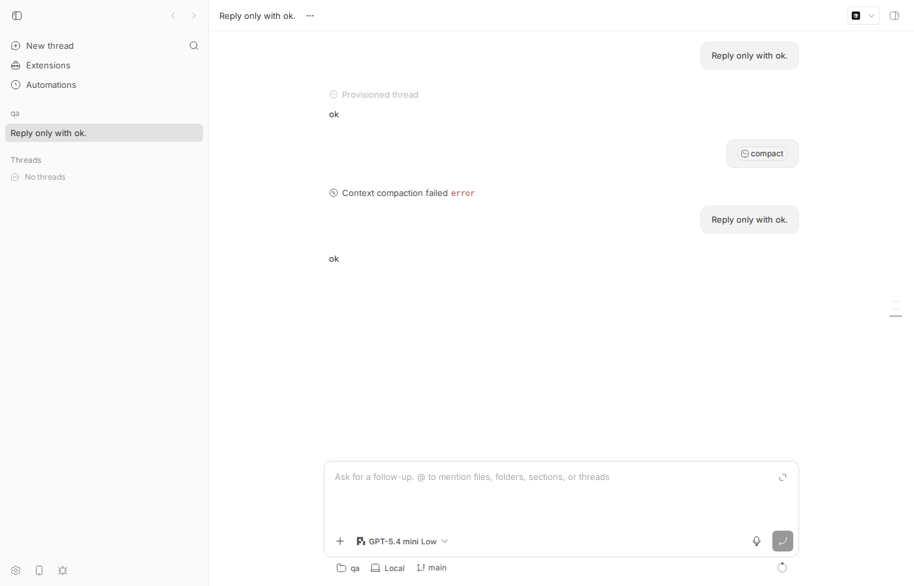
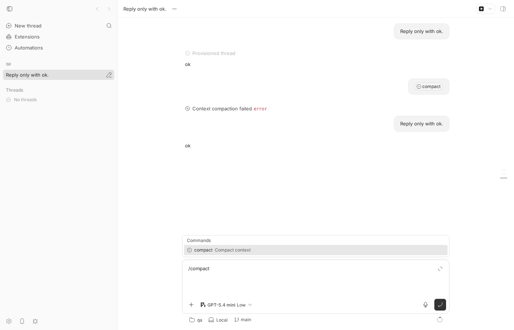
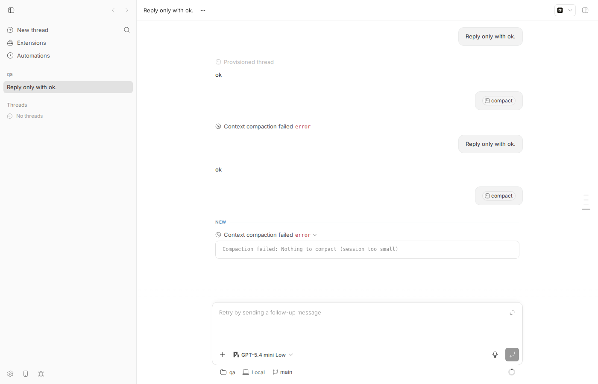

#1721 · pi /compact on a small session surfaces as a failed turn and puts the thread in error state
TL;DR
Plain-language framing. bb threads backed by the pi provider have a "compact context" action (type /compact in the composer and pick the built-in compact command, or POST /api/v1/threads/:id/compact). bb turns it into a special "maintenance turn" and asks pi's SDK to summarise old messages. Pi has a floor: it keeps the most recent ~20k tokens (keepRecentTokens, default 20000) and only compacts what lies before that. On a small session there is nothing before the floor, so pi refuses with Compaction failed: Nothing to compact (session too small).
What the user sees. The refusal is rendered as a red Context compaction failed row, the turn ends with turn/completed status=failed, and the thread's status flips to error ("Retry by sending a follow-up message" placeholder in the composer). bb thread tell <id> "…" (default steer mode) is then rejected with HTTP 409: Thread is not active, because steer mode only accepts active or idle threads. Nothing is broken in the session: a normal start-mode send (the composer, or POST /threads/:id/send with mode:"start") recovers the thread and pi answers normally.
What is actually wrong. Pi reports every manual-compaction outcome via one event, compaction_end; a "nothing to do" refusal and a genuine failure (e.g. summarisation request failed) both arrive as errorMessage. bb's pi event translator (packages/agent-runtime/src/pi/event-translation.ts) maps any manual compaction_end with an errorMessage to turn/completed status=failed, and the server maps a failed root turn to the lifecycle event run.failed, whose only transition from active is to error. There is no distinction between "pi declined because there is nothing to compact" and "pi tried and failed", and this behaviour is even pinned by an existing unit test (event-translation.test.ts:432-465, "manual compaction does not report success"), so it is a design gap rather than a regression.
Claims vs findings
| Claim | Status | Evidence |
|---|---|---|
Pi refuses /compact below its keepRecentTokens floor (20k default) with "Compaction failed: Nothing to compact (session too small)" | Verified | pi-coding-agent 0.84.0 dist/core/agent-session.js:1376-1385 throws Nothing to compact (session too small) when prepareCompaction() returns undefined; dist/core/settings-manager.js:521 defaults keepRecentTokens to 20000. Live: seq 20 of the repro thread carries exactly that message at 6,453 used tokens. |
bb surfaces it as turn/completed status=failed | Verified | Event dump 02-events-after-compact.json, seq 20: {"status":"failed","error":{"message":"Compaction failed: Nothing to compact (session too small)"}}. Translator branch at event-translation.ts:751-767. |
Thread goes to error state | Verified | bb thread wait … --status error succeeded; bb thread show prints Status: error (06-thread-show-after-ui-compact.txt). Screenshot below. |
bb thread tell then rejects with a 409 | Verified (steer mode) | Error: HTTP 409: Thread is not active (03-tell-steer.txt). Cause: resolveSendMode in thread-send.ts:174-199 maps steer on a non-active, non-idle thread to throwThreadNotWritable. A start-mode send (POST /threads/:id/send with mode:"start", what the composer does) is accepted with 200 and recovers the thread (05-send-start-recovers.txt). |
| Observed at 4.8k and 22.4k tokens too | Unverified, plausible | Reproduced at 6.4k. 22.4k is plausible: findCutPoint walks back until it has accumulated ≥20k tokens and then cuts at the nearest valid cut point at or after that entry, so a session barely over the floor can leave zero messages to summarise and still hit Nothing to compact. Not measured. |
Above the floor (34.7k) /compact works: item/started{contextCompaction} + thread/compacted + turn/completed | Not re-run | Consistent with the translator's success branch (event-translation.ts:730-736) and existing test "manual compaction owns a complete maintenance turn". Not re-run to save provider usage; the mechanism is not in question. |
Where to look: bridge.ts /compact interception and how a compaction failure maps to turn status | Verified, refined | Interception is in bridge.ts:872-877 → startPiCompaction (bridge.ts:812-829). The status mapping is not in the bridge's settle report; it is in the translator's compaction_end case (event-translation.ts:721-769). PiSdkSession.compact() deliberately swallows the rejection once compaction_end was emitted (sdk-session.ts:343-365), so the settle report says "completed" while the translator already closed the turn as failed. |
Environment
- bb
16ceb3a54(main, 2026-08-18), worktree/home/USER/projects/bb/.claude/worktrees/wf_242c3e11-a10-6. Dev instance viascripts/bb-dev-app current: app:15978, server:23978, host daemon:31978, data dir/home/USER/.bb-dev/projects-bb-.claude-worktrees-wf_242c3e11-a10-6-d11596b233f0. - Linux 7.0.0-29-generic (Ubuntu), node v24.18.0,
@earendil-works/pi-coding-agent0.84.0 (bb's pinned pi SDK), pi modelopenai-codex/gpt-5.4-mini, reasoning low, permission mode full. - Project
proj_vs92eqyrud(local path/tmp/bb-1721-repo, hosthost_ypd3mt86gh); threadthr_h4dz2zcd52. - Checked
origin/main(a108fa7ef, 5 commits past base):event-translation.tscompaction_endbranch unchanged; not fixed.
Minimal reproduction
- Build and start a dev instance:
pnpm install --frozen-lockfile --prefer-offline && pnpm exec turbo run build && scripts/bb-dev-app current. Export the printed values:export BB_SERVER_URL=http://localhost:23978 BB_HOST_DAEMON_PORT=31978. Below,bbmeansnode packages/scripts/dist/commands/run-cli.jsrun from the worktree root (orpnpm bb:dev). - Create a scratch repo and project:
mkdir -p /tmp/bb-1721-repo && git -C /tmp/bb-1721-repo init -q && echo hi > /tmp/bb-1721-repo/README.md \ && git -C /tmp/bb-1721-repo add -A && git -C /tmp/bb-1721-repo -c user.email=a@b -c user.name=a commit -qm init bb machine list # note the host id curl -s -X POST $BB_SERVER_URL/api/v1/projects -H 'content-type: application/json' \ -d '{"name":"qa","source":{"type":"local_path","path":"/tmp/bb-1721-repo","hostId":"host_ypd3mt86gh"}}' # → {"id":"proj_vs92eqyrud", ...} - Spawn a tiny pi thread and wait for it to go idle (session is ~6k tokens, far below pi's 20k floor):
bb thread spawn --project proj_vs92eqyrud --provider pi --model openai-codex/gpt-5.4-mini \ --reasoning-level low --permission-mode full --prompt "Reply only with ok." --json | grep '"id"' # "id": "thr_h4dz2zcd52" bb thread wait thr_h4dz2zcd52 --timeout 180 # Thread thr_h4dz2zcd52 reached status idle.
- Ask bb to compact the thread. Either the API (what the composer's compact command sends) …
curl -s -o /dev/null -w "%{http_code}\n" -X POST $BB_SERVER_URL/api/v1/threads/thr_h4dz2zcd52/compact \ -H 'content-type: application/json' -d '{}' # 200… or in the app: open the thread, type/compactin the composer, pick the built-in compact command from the typeahead, press Enter. - Observe the outcome:
$ bb thread wait thr_h4dz2zcd52 --status error --timeout 60 Thread thr_h4dz2zcd52 reached status error. $ bb thread show thr_h4dz2zcd52 | head -2 Thread: thr_h4dz2zcd52 Status: error $ bb thread log thr_h4dz2zcd52 | tail -6 ── User ──────────────────────────────────────────────────── /compact ── Context compaction failed ─────────────────────────────── Compaction failed: Nothing to compact (session too small) $ bb thread tell thr_h4dz2zcd52 "Reply only with ok." Error: HTTP 409: Thread is not active
Expected: a benign "nothing to compact" notice, thread staysidle,bb thread tellworks. Actual: failed turn, threaderror, steer-mode tell 409s. - Raw events for the compaction turn (
curl "$BB_SERVER_URL/api/v1/threads/thr_h4dz2zcd52/events?limit=200", full dump02-events-after-compact.json):16 client/turn/requested input=[{"type":"text","text":"/compact","mentions":[{"start":0,"end":8,"resource":{"kind":"command","trigger":"/","name":"compact","source":"command","origin":"builtin",...}}]}] 17 turn/started 18 turn/input/accepted clientRequestId=creq_8uhhrmixvw 19 item/started item.type=contextCompaction id=pi-compaction-btea2e3f0e-1-2 20 turn/completed {"status":"failed","error":{"message":"Compaction failed: Nothing to compact (session too small)"}} 21 thread/contextWindowUsage/updated usedTokens=6453 modelContextWindow=272000Note there is nothread/compacted, noitem/completedand noprovider/error; the only terminal signal is the failedturn/completed. - Recovery (proves the session is fine and this is purely a surfacing problem):
$ curl -s -X POST $BB_SERVER_URL/api/v1/threads/thr_h4dz2zcd52/send -H 'content-type: application/json' \ -d '{"input":[{"type":"text","text":"Reply only with ok.","mentions":[]}],"mode":"start"}' {"ok":true} $ bb thread wait thr_h4dz2zcd52 --timeout 120 Thread thr_h4dz2zcd52 reached status idle.
Screenshots (app path)

thr_h4dz2zcd52 is idle after the recovery turn (the earlier red "Context compaction failed error" row is from the API-triggered repro in step 4). Composer placeholder is the normal "Ask for a follow-up".
/compact in the composer opens the Commands typeahead with the built-in compact — Compact context entry. Enter selects it, Enter again sends.
Compaction failed: Nothing to compact (session too small). The composer placeholder switched to "Retry by sending a follow-up message" and the send button is disabled-grey, i.e. the thread is in error state.Unit-level repro (fails on 16ceb3a54)
File: 1721/repro/issue-1721-compact-too-small.test.ts (place at packages/agent-runtime/src/pi/issue-1721-compact-too-small.test.ts; run pnpm exec vitest run src/pi/issue-1721-compact-too-small.test.ts from packages/agent-runtime). It drives the pi event translator with the exact two SDK events pi emits for this case and asserts the desired outcome (turn not failed). Output: vitest-output.txt.
import { describe, expect, it } from "vitest";
import type { AgentSessionEvent } from "@earendil-works/pi-coding-agent";
import { createPiEventTranslator } from "./event-translation.js";
describe("issue #1721: pi manual /compact on a too-small session", () => {
it("does not fail the turn when pi has nothing to compact", () => {
const translator = createPiEventTranslator({ providerId: "pi" });
const context = { threadId: "bb-thread-1" };
translator.translatePiEvent(
{ type: "compaction_start", reason: "manual" } satisfies AgentSessionEvent,
context,
);
const completed = translator.translatePiEvent(
{
type: "compaction_end",
reason: "manual",
result: undefined,
willRetry: false,
aborted: false,
errorMessage: "Compaction failed: Nothing to compact (session too small)",
} satisfies AgentSessionEvent,
context,
);
const turnCompleted = completed.find((event) => event.type === "turn/completed");
expect(turnCompleted).toBeDefined();
// Actual on 16ceb3a54: status === "failed" with the pi error message,
// which the server maps to run.failed -> thread status "error".
expect(turnCompleted).toMatchObject({ status: "completed" });
});
});
FAIL @bb/agent-runtime src/pi/issue-1721-compact-too-small.test.ts > issue #1721: pi manual /compact on a too-small session > does not fail the turn when pi has nothing to compact
AssertionError: expected { type: 'turn/completed', …(5) } to match object { status: 'completed' }
- Expected
+ Received
{
- "status": "completed",
+ "status": "failed",
}
Note the pre-existing test event-translation.test.ts#L432-L465 asserts the opposite for this exact message ("failed manual compaction does not report success"), so a fix must update that case too.
Root cause
1. Pi signals "nothing to do" through the same channel as a real failure. AgentSession.compact() in pi-coding-agent 0.84.0 (dist/core/agent-session.js:1366-1385, vendored, no repo permalink) emits compaction_start{reason:"manual"}, then computes prepareCompaction(pathEntries, settings). With keepRecentTokens = 20000 (settings-manager.js:521) and a 6k-token session, findCutPoint never accumulates the budget, the cut lands at the first message, messagesToSummarize is empty and prepareCompaction returns undefined. The session then throws Nothing to compact (session too small) (or Already compacted), and its catch emits compaction_end{reason:"manual", aborted:false, errorMessage:"Compaction failed: …"} before re-throwing:
const preparation = prepareCompaction(pathEntries, settings);
if (!preparation) {
const lastEntry = pathEntries[pathEntries.length - 1];
if (lastEntry?.type === "compaction") throw new Error("Already compacted");
throw new Error("Nothing to compact (session too small)");
}
…
catch (error) {
const message = error instanceof Error ? error.message : String(error);
const aborted = message === "Compaction cancelled" || …;
this._emit({ type: "compaction_end", reason: "manual", result: undefined, aborted, willRetry: false,
errorMessage: aborted ? undefined : `Compaction failed: ${message}` });
throw error;
}
2. bb's bridge routes the request straight to that SDK call. The server's compact route (routes/threads/actions.ts#L130-L157) sends a start-mode turn whose only input is the standalone built-in /compact mention. The pi bridge intercepts it (bridge.ts#L872-L877) and calls startPiCompaction → PiSdkSession.compact() (bridge.ts#L804-L829, sdk-session.ts#L343-L365). Nothing pre-checks whether there is anything to compact.
3. The translator treats every manual compaction_end with an errorMessage as a failed turn. event-translation.ts#L721-L769:
if (!parsed.data.aborted && !parsed.data.errorMessage) {
events.push({ type: "thread/compacted", … });
} else if (parsed.data.reason !== "manual") {
events.push({ type: "provider/error", … }); // automatic compaction only
}
if (parsed.data.reason === "manual" && state.currentTurnId === turnId) {
events.push({
type: "turn/completed", …,
status: parsed.data.aborted ? "interrupted" : parsed.data.errorMessage ? "failed" : "completed",
...(parsed.data.errorMessage ? { error: { message: parsed.data.errorMessage } } : {}),
});
turnState.finishTurn({ state, threadId: stateKey });
}
So the pi refusal becomes seq 20 turn/completed status=failed error.message="Compaction failed: Nothing to compact (session too small)". The contextCompaction item opened at compaction_start is never completed; the thread-view infers "Context compaction failed" from the failed turn (packages/thread-view/src/build-event-projection.ts:533-555 → finalizeOpenCompactionsForTurn).
4. The server maps a failed root turn to run.failed, and run.failed from active is error. turn-completed-events.ts#L21-L31 (lifecycleEventForTurnCompletion) and thread-lifecycle.ts#L90-L93 (active: { "run.failed": "error" }). The compaction turn is a root turn (it was requested through the normal client-turn path), so the thread lands in error.
5. Why bb thread tell 409s. tell defaults to steer mode; resolveSendMode (thread-send.ts#L174-L199) accepts steer only on active (steer) or idle (start) threads and throws Thread is not active for error. That is generic behaviour for any errored thread, not compaction-specific; it is the reason the benign refusal blocks agent-driven follow-ups. A start-mode send is accepted from error (thread-send.ts:582-590), which is why the composer recovers.
Deeper issue. The bridge protocol has no notion of a "no-op" terminal outcome for a maintenance turn: turn/completed is completed | interrupted | failed, and a completed compaction is only ever announced by thread/compacted. Any provider that can decline a manual compaction will hit the same choice between lying (completed + no thread/compacted, which also leaves the UI's contextCompaction item pending) and erroring the thread. Pi's messages are also unstructured strings, so any classification in bb has to match text.
Proposed fix (first principles)
- Classify pi's refusals in the translator (
packages/agent-runtime/src/pi/event-translation.ts,compaction_endmanual branch). Pi 0.84.0 has exactly two "declined before doing anything" messages:Compaction failed: Nothing to compact (session too small)andCompaction failed: Already compacted. Whenreason === "manual",!abortedand the message matches one of these, emitturn/completed status:"completed"(noerror) instead offailed, so the server appliesrun.succeeded→idle. Keepfailedfor everything else (e.g.Summarization failed: …, no model selected), which are real failures. - Close the open compaction row with a truthful message. A
completedturn withoutthread/compactedleaves thecontextCompactionitem pending in the timeline (operation-projection.ts:openCompactionsByKey). Options, cheapest first: (a) emitprovider/error{message:"Context compaction skipped", detail:<pi message>}alongside the completed turn — the server does not change lifecycle onprovider/error, andgetCompactionTurnFinalizationalready turns it into a closed row (title today reads "Context compaction failed"; retitle inpackages/thread-view/src/operation-projection.ts:finalizeOpenCompactionsForTurnwhen the turn itself completed); or (b) add askipped/detailfield to thecontextCompactionitem and emititem/completed— cleaner, but it is a domain contract change (packages/domain/src/provider-event.ts) and, since items travel daemon → server, requires aHOST_DAEMON_PROTOCOL_VERSIONbump. - Update the pinned test
event-translation.test.ts:432-465: the "failed" row currently uses the "Nothing to compact" message as its example of a failure; change that row to a genuine failure message and add a row asserting the no-op outcome (the repro test above can be folded in). - Optional server-side pre-empt: the compact route already knows
contextWindowUsage.usedTokens; it could refuse with a friendly 409 when usage is far below any plausible floor. Not recommended as the primary fix:keepRecentTokensis a pi-side setting the server does not know, and it would not help the "Already compacted" case.
Risks: text matching against pi's messages is brittle across pi upgrades (pin the strings next to the pi version and cover them with the unit test); making the turn completed without thread/compacted must not trigger post-turn side effects that assume compaction happened (none found: thread/compacted is the only signal consumers key off). No wire-shape change for option 2(a).
PR review
No open PRs are linked to this issue.
Related issues
- #1103 (closed): pi provider had no manual compaction; the
/compactmaintenance-turn path this report exercises was added for it in PR #1152 (commit 12acc8e5f); the settle fallback instartPiCompactioncame with #1432 (7c3d1ab76). - #448 (closed): original request for a way to compact threads.
- #1431 (closed): claude-code
/clearturn never settles — the sibling problem of a maintenance turn's terminal event being wrong. - #1640: provider bridge protocol; this bug was found during its final gate.
Appendix
Commands run
gh api repos/get-bb/bb/issues/1721 --jq .body
pnpm install --frozen-lockfile --prefer-offline
pnpm exec turbo run build
git fetch origin main; git log 16ceb3a54..origin/main --oneline -- packages/agent-runtime/src/pi apps/server/src/internal
git checkout 16ceb3a54 # worktree had been at a108fa7ef; repro done against base
scripts/bb-dev-app current # app :15978 server :23978 daemon :31978
export BB_SERVER_URL=http://localhost:23978 BB_HOST_DAEMON_PORT=31978
node packages/scripts/dist/commands/run-cli.js machine list
curl -s -X POST $BB_SERVER_URL/api/v1/projects … (see step 2)
node packages/scripts/dist/commands/run-cli.js thread spawn --project proj_vs92eqyrud --provider pi --model openai-codex/gpt-5.4-mini --reasoning-level low --permission-mode full --prompt "Reply only with ok." --json
node packages/scripts/dist/commands/run-cli.js thread wait thr_h4dz2zcd52 --timeout 180
curl -s -o /dev/null -w "%{http_code}\n" -X POST $BB_SERVER_URL/api/v1/threads/thr_h4dz2zcd52/compact -H 'content-type: application/json' -d '{}'
node packages/scripts/dist/commands/run-cli.js thread wait thr_h4dz2zcd52 --status error --timeout 60
node packages/scripts/dist/commands/run-cli.js thread show thr_h4dz2zcd52 --json
node packages/scripts/dist/commands/run-cli.js thread log thr_h4dz2zcd52
curl -s "$BB_SERVER_URL/api/v1/threads/thr_h4dz2zcd52/events?limit=200" > 1721/repro/02-events-after-compact.json
node packages/scripts/dist/commands/run-cli.js thread tell thr_h4dz2zcd52 "Reply only with ok." # HTTP 409: Thread is not active
node packages/scripts/dist/commands/run-cli.js thread tell thr_h4dz2zcd52 "Reply only with ok." --mode queue # HTTP 400: Sender thread is invalid (unrelated: queue mode needs a sender thread)
curl -s -X POST $BB_SERVER_URL/api/v1/threads/thr_h4dz2zcd52/send -H 'content-type: application/json' -d '{"input":[{"type":"text","text":"Reply only with ok.","mentions":[]}],"mode":"start"}' # {"ok":true}, recovers
dev-browser --browser bb1721 --headless … (scripts: 1721/repro/browser-compact.js, browser-compact-send.js)
node packages/scripts/dist/commands/run-cli.js thread show thr_h4dz2zcd52 # Status: error (after UI compact)
cd packages/agent-runtime && pnpm exec vitest run src/pi/issue-1721-compact-too-small.test.ts
pnpm dev:stop
Artifacts
01-spawn.json— spawn response02-events-after-compact.json— full event list after the first (API) compact03-tell-steer.txt,04-tell-queue.txt— CLI tell outputs on the errored thread05-send-start-recovers.txt— start-mode send accepted06-thread-show-after-ui-compact.txt— status after the UI-triggered compact + tell 409browser-compact.js,browser-compact-send.js,browser-menu.js— dev-browser scripts used for the screenshotsissue-1721-compact-too-small.test.ts,vitest-output.txt— unit repro07-server-log-excerpt.txt— the only lifecycle log line for the thread (an unrelated benign "no transition for run.started from status active" during spawn); neither server nor daemon logs mention the compaction refusal, so the event stream is the only trace.
Pi SDK excerpts (node_modules/@earendil-works/pi-coding-agent@0.84.0)
// dist/core/settings-manager.js:521
return this.settings.compaction?.keepRecentTokens ?? 20000;
// dist/core/compaction/compaction.js:492-540 (prepareCompaction)
const cutPoint = findCutPoint(pathEntries, boundaryStart, boundaryEnd, settings.keepRecentTokens);
…
if (messagesToSummarize.length === 0 && turnPrefixMessages.length === 0) {
return undefined;
}